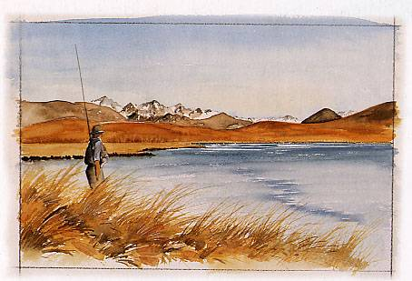
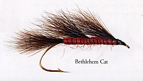
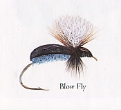
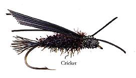
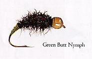
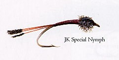
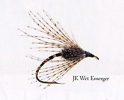
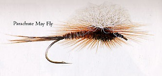
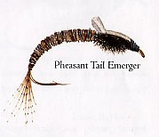

ティップス
７月 JOHN F. KENT 氏 EMILY 湖

EMILY 湖

Bethlehem Cat

Blow Fly

Cricket

Green Butt Nymph

JK Special Nymph

JK Wet Emerger

Parachute May Fly

Pheasant Tail Emerger
フライタイヤー JOHN F. KENT 氏 の紹介
引退した開業医であるジョン・ケント氏は、これまで50年以上にわたってニュージーランドにおける鱒釣りのライセンスを所持している。
ＮＺ南島及び北島の鱒釣りガイドブック（South Island Trout Fishing Guide, North Island Trout Fishing Guide）また、パートナーのパッティ・マドセン氏（Patti Madsen） との共著 New Zealand's Top Trout Fishing Waters の著者である彼は、14歳の時に、ニュージーランドのフライタイイング界の巨匠である故 ロバート・ブラッグ氏（Robert Bragg）に影響されてフライタイイングを始めた。
ジョンはアメリカフライフィッシャーズ連盟の総会（American Federation of Fly Fishers Conclave）に、ゲストスピーカーとして二度招かれたほか、国際フライプレートプロジェクト（International Fly Plate Project）にも招かれ、このプロジェクトに貢献している。
パートナーのパッティさんとの楽しい暮らしよりもはるかに長い時間を、ジョンはロバート・ブラッグ氏の遺影を机越しに見つめながらフライを巻いてきたのである！
これらの記事・画像の著作権は、Michael Scheele 氏 にあります。無断での転載・二次利用をお断りいたします。
Copyright © 2003-2009 Michael Scheele All Rights Reserved.
NZ釣行に向けてのフライタイイング へ
ティップス 目次へ
サイトマップ
ホームへ
お問い合わせ